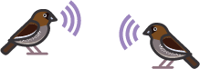
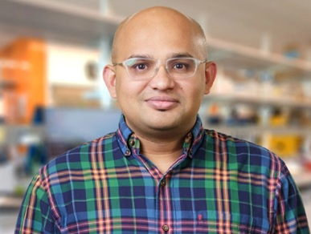
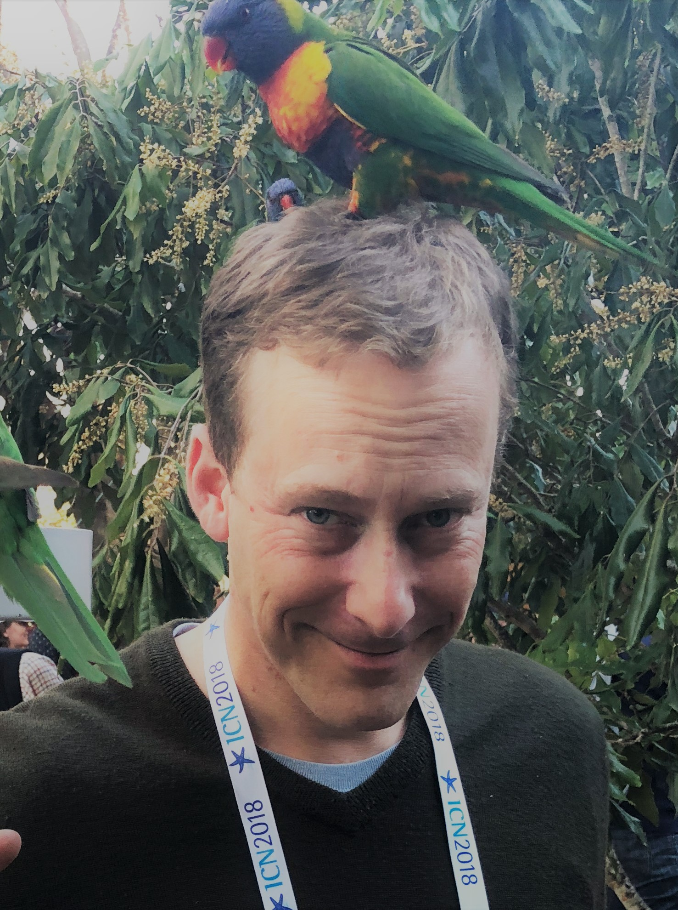

Events

Computational and Mechanistic Analyses of Communicative Interactions
Organized by Logan S. James, Jon T. Sakata, & Sarah C. Woolley
McGill University, Montréal
May 29, 2026
Vocal interactions are pervasive across animals, and it is important to understand the extent to which the "rules" governing vocal interactions are shared amongst animals as well as with humans. This conference will bring together researchers using mathematical and computational approaches to model vocal interactions, facilitating the sharing of data and resources to detect, classify, and analyze vocalizations.
Register Here
Registration is free but required.
Refreshments
Lunch and coffee breaks provided for all attendees.
Schedule (tentative)


Woolley, Sakata, James, Cusimano
Confirmed Speakers

Logan James
McGill University | Earth Species Project
Daniel Takahashi
Federal University of Rio Grande do Norte
Maddie Cusimano
Earth Species Project

Arkarup Banerjee
Cold Spring Harbor Laboratory
Daniela Vallentin
Max Planck Institute for Biological Intelligence

Michael Long
NYU School of Medicine
Gregg Castellucci
University of Rochester
Simone Falk
Université de Montréal
Caroline Palmer
McGill University